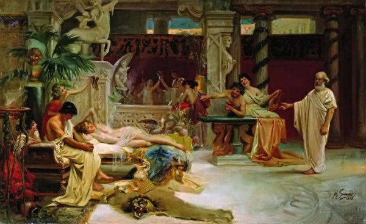

История развития проституции

Виды проституции
В глубокой древности, когда брака не существовало, было явление, которое называли «гражданской проституцией». Фактически это не проституция, потому что ею занимались без вознаграждения. Жены и дети в племени были общими. В языке дикарей, населявших современную Калифорнию, нет слова, обозначающего понятие «брак». Зато есть слово, обозначающее ревность. Ревность проявляется, только когда женщина отдается мужчине другого племени. У массагетов, кочевого народа Скифии, каждый мужчина брал себе жену, которой потом пользовались все. Если кто-нибудь желал обладать конкретной женщиной, он привязывал свой колчан к повозке и тут же удовлетворял свое желание. У андаманов женский отказ совокупляться считался преступлением, в их культуре мужчина и женщина заключали временный союз, когда женщина забеременеет. Стоило ей родить ребенка, как все возвращалось на круги своя. Многие народы при наличии института брака позволяли женщинам вступать в половую связь с кем угодно при определенных обстоятельствах: смерти мужа, болезни, отсутствии супруга или ссоре. Не пропадать же женщине! У современного африканского племени генданов есть институт брака, но женщина может вступать в половую связь вообще с кем угодно. Более того, после каждого удачного раза с новым мужчиной она получает право надеть кожаный браслет, а муж гордится, что его жена желанная и востребованная. Искренне гордится! С появлением патриархата и частной собственности многие народы заменили гражданскую проституцию на гостевую. Для современного человека это еще более странная вещь, чем гражданская проституция. Представь, что ты приходишь в дом лучшего друга, а он на радостях предлагает тебе свою 11-летнюю дочь. Отказываться нельзя, ведь друг обидится, потому что он отдает тебе лучшее, что у него есть. Гостевая проституция до сих пор существует, например, на Таити. История знает случай, когда один христианский миссионер Харрис отказался от почетного предложения чей-то жены, когда был на Нукагиве. Всё закончилось благополучно: женщины племени проникли к нему ночью и сняли с него штаны, чтобы убедиться, действительно ли Харрис мужик. Нечто похожее на проституцию было у некоторых народов, предлагавших свою жену или дочь иностранцам, но уже за деньги или за курицу. Как видишь, брак тут не искореняет проституцию, а очень даже наоборот. Шло время, и брак стал куда более распространенным явлением. Сначала женщина могла спать только с членами одного племени, позже с членами одной семьи, а чуть позже либо с мужем, либо с его братьями, либо с вождем. Гораздо позже это было вытеснено традиционными моногамными отношениями, к которым мы привыкли. Религиозная проституция существовала в том или ином виде с начала времен. Например, лишить девушку девственности мог либо вождь, либо жрец, а им за это еще и доплачивали. Некоторые девушки платили представителям духовенства за секс, считая это в некотором роде благословением. Определенно, во все времена жрецам жилось очень неплохо. Параллельно с религиозной проституцией была и юридическая. Проститутки официально оформлялись как проститутки, покупали себе право на проституцию и занимались этим видом профессиональной деятельности. Нередко они были крайне уважаемыми членами полиса или народа, в отличие от обычных женщин. Такие проститутки оставляли свое ремесло, выходили замуж (а желающих было немало) и жили в почете. Есть легенда, что сам Будда как-то раз навещал знаменитую куртизанку в Везали. Известные проститутки становились знатью и даже правительницами.
История проституции в величайших цивилизациях
Все знают город Вавилон, одну из колыбелей цивилизации. Историк Геродот, к словам которого не нужно относиться слишком серьезно, писал, что все женщины этого города были обязаны хотя бы раз в жизни явиться в храм богини Мелитты (богини женского начала). Там девушки дожидались чужестранцев, которые, чтобы заняться с ними сексом, бросали им на колени определенную сумму денег. Эти деньги жертвовались на нужды храма. Любая желающая могла продолжить «карьеру» и стать жрицей богини. Девушка жила при храме, удовлетворяла клиентов, после чего могла окончить карьеру, с легкостью выйдя замуж. Будущий муж обязательно интересовался, сколько мужчин посещало девушку во время ее службы. Чем больше, тем лучше жена. Евреи могли продать свою дочь любому человеку в наложницы. Закончилось это только с приходом Моисея, который официально запретил продажу дочерей. Женщины у еврейских племен, которые хотели себя продать, сидели вдоль дорог, прикрытые покрывалом. При виде возможного клиента они бежали за ним, убеждая его «купить» их. В Древней Греции процветали все виды проституции, перечисленные выше. Религиозная проституция пришла к грекам из Вавилона, изменилось только имя богини. В Греции она достигла своего апогея. В честь Афродиты и Диониса устраивали колоссальные оргии с участием знаменитых гетер, рабынь и девственниц. Выглядело это как фильм «Калигула», только красивее. На такие праздники съезжались чужеземцы чуть ли ни со всех концов света. Гетеры, рабыни и рядовые проститутки после таких праздников ходили враскоряку, но кошельки их рвались от обилия монет. Древние греки также узаконили проституцию и создали институт государственных публичных домов — диктериад, где содержались и работали рабыни. Создавались такие дома якобы для того, чтобы оградить от разврата честных замужних женщин. Беднякам и прочим неимущим мужам было настоящее раздолье — плата в диктериады была мизерной и только за вход. Ксенарх описывал внешность женщин в этом заведении: абсолютно прозрачные одежды, иногда вуаль на лице как знак особого цинизма.
Средние века и проституция
Как ни странно, в средние века с их кострами Инквизиции тоже не отказывались от услуг продажной и просто доступной любви. Очередная порция человеческого лицемерия! Общность женщин внутри общины исповедовало огромное количество христианских сект, например николаиты. Эта же секта считала абсолютно нормальным предаваться всевозможному пороку, более того, страсти и пороки считались священными. Адамиты и карпократы тоже так считали. В средние века возродилась и долгое время поддерживалась гостевая проституция. Дорогому гостю предлагали право на первую брачную ночь, а иногда это право было всецело за лордом. В раннее Средневековье ,в эпоху первых Крестовых походов, епископы, бароны и некоторые рыцари содержали при себе подобие гарема, но не регистрировали отношения с этими женщинами обетов безбрачия. Потом все, конечно, ужесточилось. Средневековые проститутки ждали своих клиентов вечером у городских колодцев. Вечером туда ходили не только проститутки, но и вполне приличные женщины с целью подцепить любовника, пока муж в разъезде. Те, кто носил пояс верности или просто был верным, болтали с другими женщинами о любовных делах. Если странник, путешествующий по средневековой Европе, хотел развлечься, практически в любом городе ему нужно было ждать у городского или сельского колодца развратных женщин. Тем, кого спермотоксикоз застал в пути, следовало найти специальные небольшие хижины, которые назывались «borde». В них придорожные проститутки принимали клиентов вдали от людских глаз. Мода на маленькие домики шлюх пошла из Римской империи. В этих домах проститутки прятались от надзора городской милиции, жен своих клиентов и просто пребывали в удобстве. Они получили особое распространение, когда наивный монарх Людовик IX пытался изгнать распутных женщин за пределы Франции. Но это ни к чему не привело. Есть мнение, что благодаря гонениям Людовика к публичным женщинам впервые стали хуже относились (до того проституция считалась обычным явлением). Дом проститутки часто отличался от других домов: у него были раскрашенные решетки на окнах, расписные стены и прочие особые приметы. Духовным лицам и женатым мужчинам было строго-настрого запрещено появляться у проституток, но это никого не останавливало. Отношение к проституткам резко испортилось после вспышек эпидемии сифилиса, когда в очередном городе этой болезнью заражалась треть мужчин. Не стоит думать, что проституция никак не каралась. Наказывали чаще всего тех, кто попадался или был замешан в сводничестве. Им отрезали носы или клеймили, но наказание никак не мешало изуродованным женщинам заниматься этим самым снова.